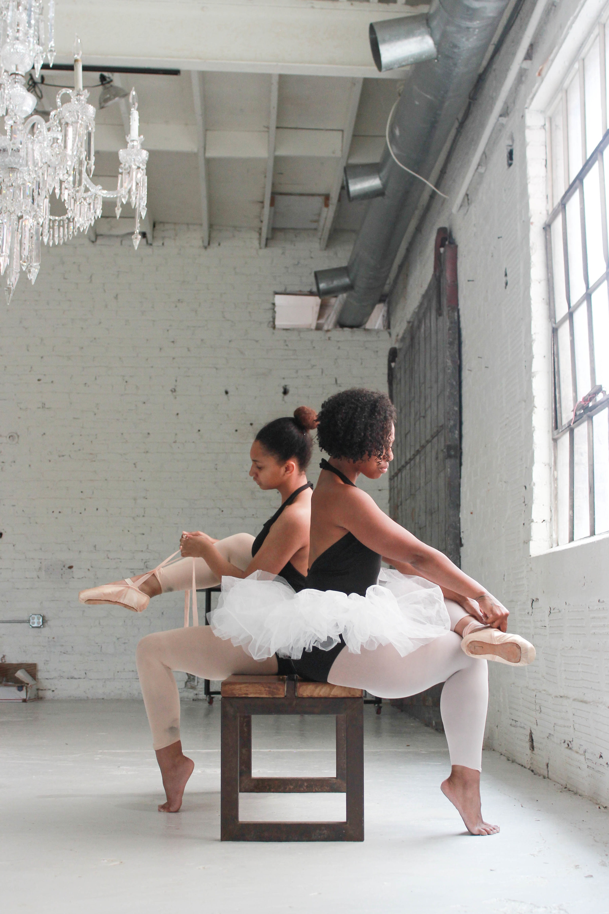

3rd Floor 106 West 1st Street North Vancouver BC V7M 1A9 CANADA
BALLET BLOCH CANADA
Artistic Director: Tracy-Lea Bloch
info@balletbloch.com

© Ballet Bloch Canada 2016
Programs
The Professional Training and Post Graduate Program is for the serious/full-time dancer aged 10 to 22 who is training to improve technical ability and artistic performance. This program offers young dancers the opportunity to showcase themselves as part of a Corps de Ballet and as a Soloist.
The Foundation Training Program is for the amateur/part-time dancer aged 7-12yrs who loves to dance and wants to work on poise, posture, and discipline together with technique, musicality, and artistry. A minimum of twice a week is required and students (if ready) are encouraged to enter an ISTD ballet exam each year.
The roots of Imperial Classical Ballet stem from the early days of the ISTD and the first written syllabus in 1913 which was based on the teaching of the French School from the Paris Opéra. The syllabus has now evolved to promote the English classical style and addresses the changing needs of Ballet dancers today.
Children aged 3-6yrs attend classes once or twice a week. Our young ballerina program encourages age appropriate creativity, musicality, and physicality. Children gain confidence, poise, and a solid frame work on which to build classical ballet technique
Contact us at: info@balletbloch.com for an assessment
at NSAD
with Ballet Bloch faculty and guest teachers
3rd Floor 106 West 1st Street North Vancouver BC V7M 1A9 CANADA
BALLET BLOCH CANADA
Artistic Director: Tracy-Lea Bloch
info@balletbloch.com
© Ballet Bloch Canada 2016